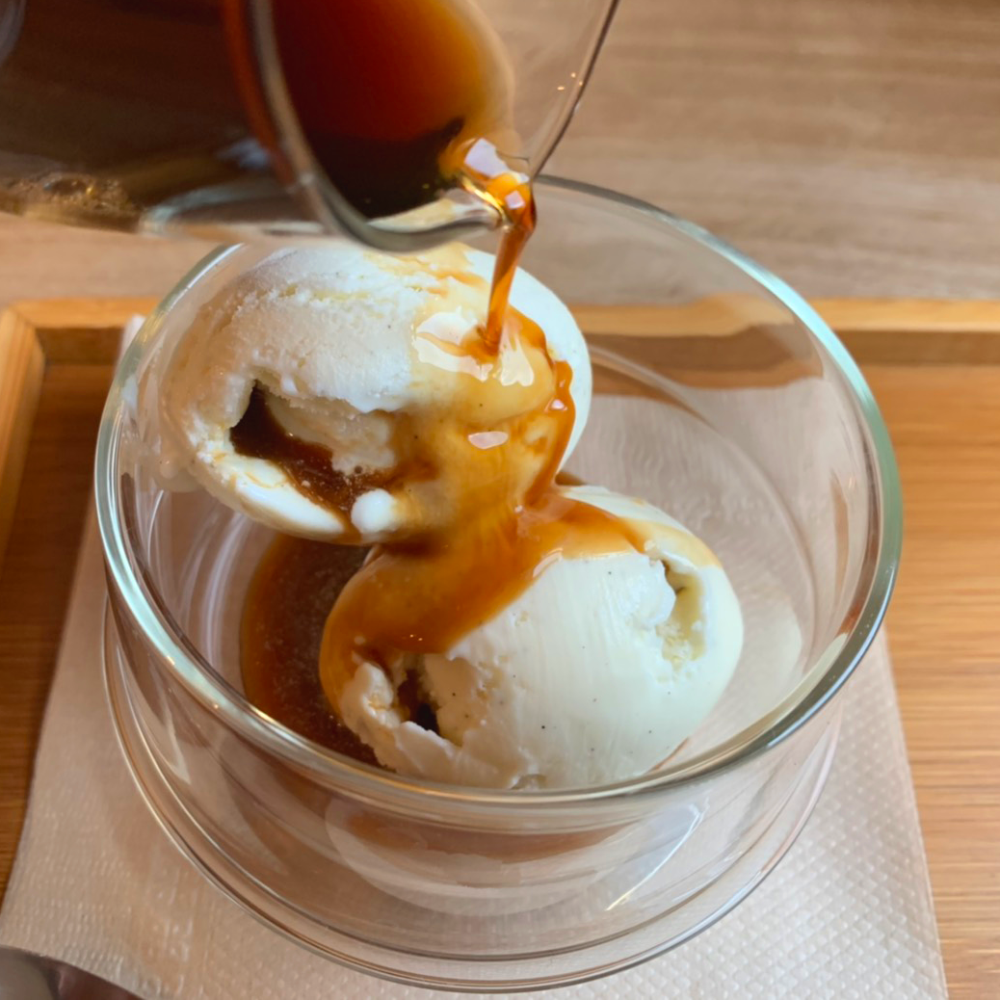
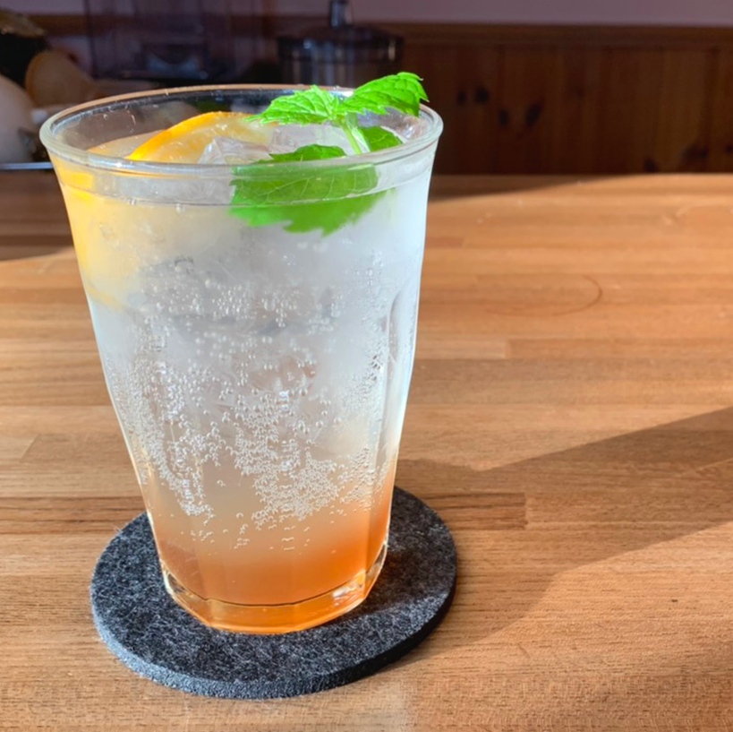
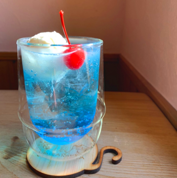
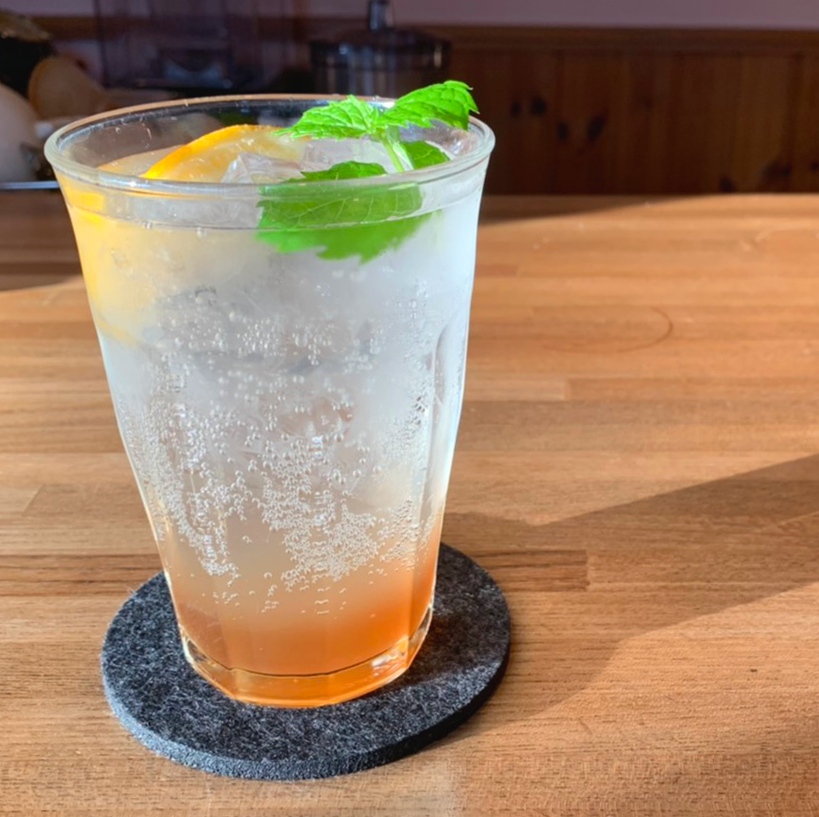
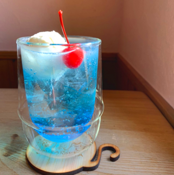
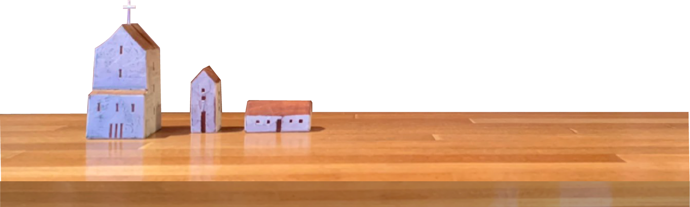

Cafe海猿舎とは
昭和初期に建てられた元駅前旅館の建物が
旅人宿に生まれ変わった「ぼちぼちいこか増毛舘」。
そこに併設されている9席しかない小さな喫茶店。
北海道増毛町
漁業や農業が盛んな北海道の増毛（ましけ）町。歴史的建造物が立ち並び、潮が香る道沿いに海猿舎は位置しています。海猿舎には、増毛町で実った瑞々しい果実を使ったメニューがあります。


暑寒別岳の水
増毛町には暑寒別岳という増毛町の象徴のような山があり、そこから流れる伏流水を使ってコーヒーを淹れています。
味わい深いネルドリップ
コーヒーはネルドリップで淹れています。繊維で濾過されたコーヒーは雑味が抑えられ、コクのある、舌触りが滑らかな味が楽しめます。


こだわりコーヒーカップ
器はひとつひとつ店主が窯元や陶器市に出向き購入しています。どれも同じ形ではない、こだわりの器で飲むことができます。
Menu
ぼちぼちブレンド
店主が好きなインドの豆を主体にブレンドしたほろ苦深煎りタイプのコーヒーです
......400yen
海猿舎ブレンド
ブラジル、コロンビアを主体にブレンドしたすっきりとした酸味のある浅煎りタイプのコーヒーです
......400yen
ぼちぼちブレンド
作り置きではなく、その場で淹れたコーヒーを急冷させているので香りをそのままに楽しめます
......450yen

アフォガード

チョコレート&

自家製

海猿舎
アフォガード
500yen
チョコレート&
くるみの
パウンドケーキ
400yen

自家製
ジンジャエール
500yen

海猿舎
クリームソーダ
500yen
News
Gallery
Access
〒077-0205
北海道増毛郡増毛町弁天町1-21-1
旧増毛駅バス停から徒歩2分
座席数 9席
支払い方法 現金・PayPay